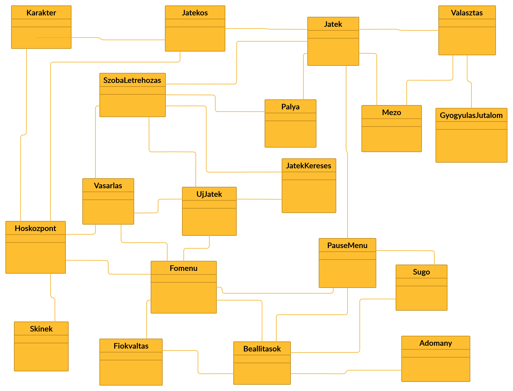
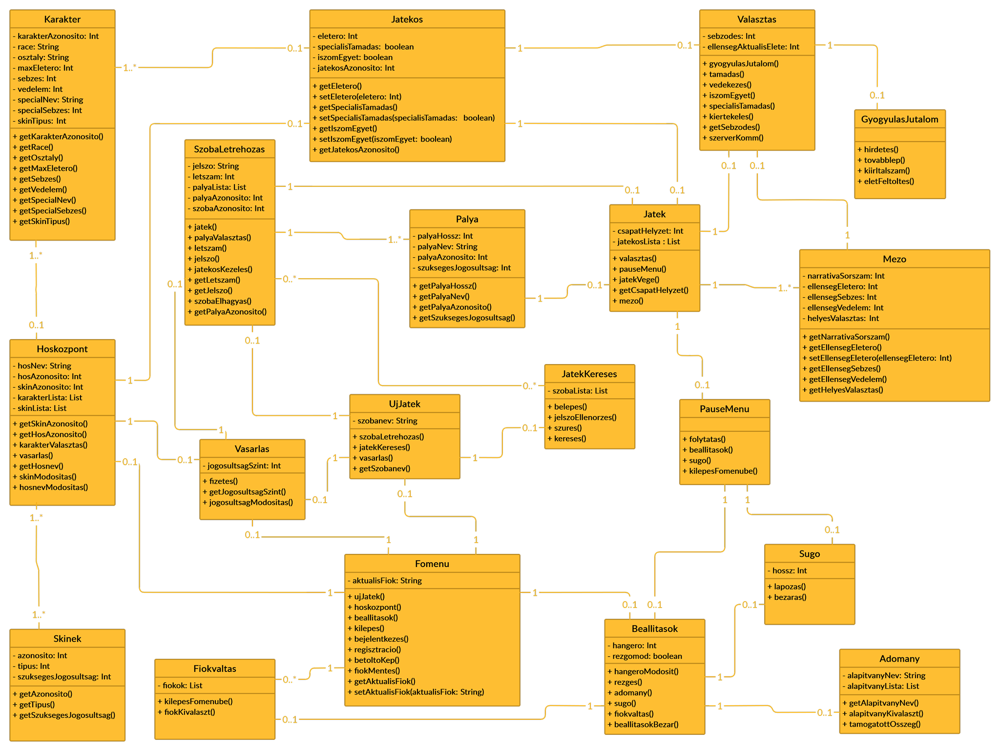
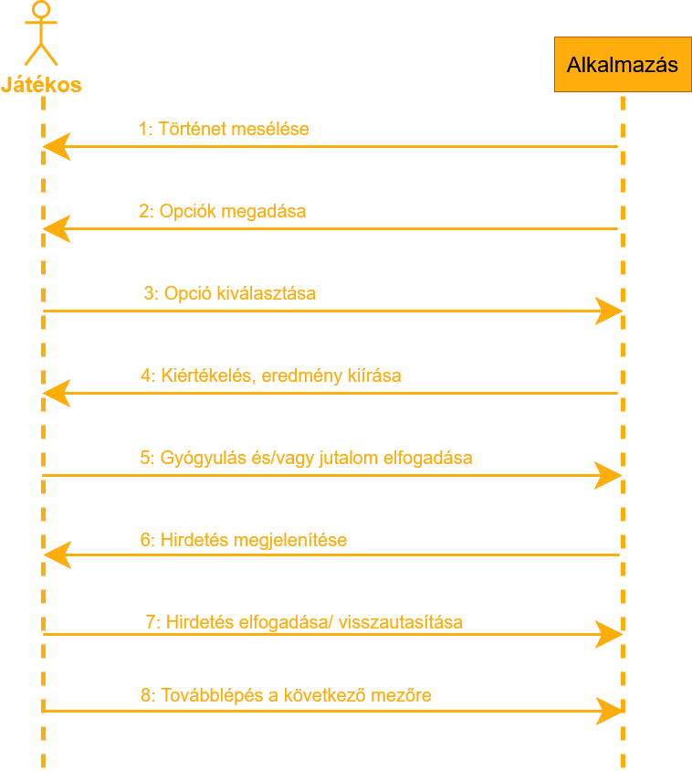
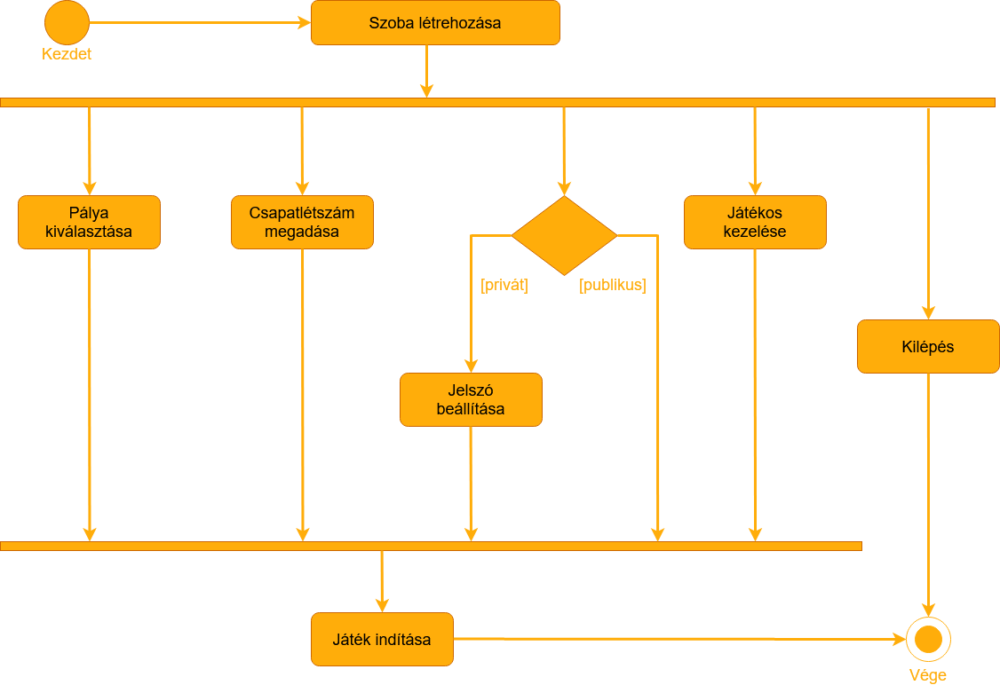
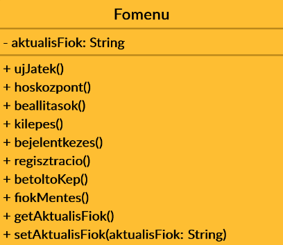

Csoport neve: HighSoft
Feladatsorszáma: F4
Feladat címe:Analízis modell
Analízis modell
Gyakorlatvezető:
SZŰCS MIKLÓS
Csoporttagok:
| TAMÁS JANKA | GIE0EJ | TAMAS.JANKA95@GMAIL.COM |
| SZILÁGYI GÁBOR | S9NJK6 | GABSZI12345@GMAIL.COM |
| JÓNIS BÁLINT | LN40BG | JONISBALINT@GMAIL.COM |
| DUDÁS DÁNIEL | VUXFKS | D.DANIEL910617@GMAIL.COM |
| KLÁBEN SZABOLCS BENCE | H46LPD | KLABEN.SZABOLCS@GMAIL.COM |
Beadás Dátuma:
2020. 11. 16.
| Dátum | Verzió | Leírás | Szerző(k) |
|---|---|---|---|
| 2020. 11. 15. | 1.0 | Első verzió | Tamás Janka & Dudás Dániel |
| 2020. 11. 16. | 1.1 | Címlap és sablon alkalmazása (HTML-be tevés) | Kláben Szabolcs Bence |
A megbeszélések időpontjai:
|
2020. 11. 7. 15:00 Jelen lévő személyek: |
|
Tartalomjegyzék
- Bevezetés
- Kezdeti osztálydiagram
- Az analízis modell osztálydiagramja
- Statikus modell
- Dinamikus modell részlet
- Funkcionális modell részlet
- Az analízis modell osztályainak listája
- Mellékletek
1.Bevezetés
Ezen a dokumentum célja a Heroes of Potions játékalkalmazás analízis modelljének a reprezentálása. A dokumentum bemutatja a szoftver osztálydiagramját és annak leírását. Emellett egyes funkciókat szekvencia és aktivitás diagrammal is szemléltetünk.
2. Kezdeti osztálydiagram
2.1 Osztálydiagram
2.2. Osztályok felsorolása
- Karakter
- Jatekos
- Jatek
- Valasztas
- SzobaLetrehozas
- Palya
- Mezo
- GyogyulasJutalom
- JatekKereses
- Vasarlas
- UjJatek
- Hoskozpont
- PauseMenu
- Fomenu
- Sugo
- Skinek
- Adomany
- Fiokvaltas
- Beallítasok
3. Az analízis modell osztálydiagramja
3.1 Statikus modell
3.2. Dinamikus modell részlet
Az alábbi szekvencia diagram a játékmenet egy mezője/köre alatt váltott üzeneteket mutatja be a játékos és a szoftver között.
3.3. Funkcionális modell részlet
Az alábbi aktivitás diagram a játékos által egy új játék elkezdését megelőző „Szoba létrehozása” funkciót mutatja be a játék indításáig.
3.4. Az analízis modell osztályainak listája
Fomenu:
Attribútumok:
- aktualisFiok: az aktuálisan bejelentkezett felhasználó fióknevét tárolja
Operációk:
- ujJatek: új játék kezdeményezesére szolgáló metódus.
- hoskozpont: a Hősközpont megnyitásáért felelő metódus.
- beallitasok: a Beállítások megnyitásáért felelős metódus.
- kilepes: az alkalmazásból való kilépésért felelős metódus.
- bejelentkezes: ellenerőzi, hogy van-e aktuiálisan bejelentkezett felhasználó. Ha nincs, lefuttatja a regisztrációs metódust.
- regisztracio: bekéri a szükséges adatokat a felhasználótól, futtatja a fiokMentes metódust, majd belépteti a felhasználót.
- betoltoKep: az alkalmazás elindítása után legelőször lefutó metódus. Az alkalmazás teljes betöltéséig tart.
- fiokMentes: az újonnan regisztrált felhasználó fiókadatainak mentésére szolgáló metódus.
- getAktualisFiok: getter metódus
- setAktualisFiok: setter metódus
Attribútumok:
- szobanev: a játékos által létrehozott szoba nevét/azonosítóját tárolja.
Operációk:
- szobaLetrehozas: a metódus bekéri a felhasználótól a szoba nevét, létrehozza ezt a szobát, majd megnyitja a szoba szerkesztő felületét.
- jatekKereses: a közelben lévő szobákat megkeresi, majd megjeleníti ez a metódus.
- vasarlas: megnyitja a vásárlási felületet.
- getSzobanev: getter metódus.
Attribútumok:
- jelszo: a privátra beállított szoba eléréséhez szükséges jelszót tárolja.
- letszam: a játékosok számát tárolja.
- palyaLista: a pályanevek listája.
- palyaAzonosito: a kiválasztott pálya azonosítója.
- szobaAzonosito: a létrehozott szoba azonosítója.
Operációk:
- jatek: a játék elindításáért felelős metódus.
- palyaValasztas: beállítja a pálya azonosítóját.
- letszam: beállítja a csapat létszámát.
- jelszo: privátra állítja a szobát, majd menti a megadott értéket.
- jatekosKezeles: a felhasználó döntése alapján elfogadja vagy visszautasítja a játékost.
- getLetszam: a létszám getter metódusa.
- getJelszo: a jelszó getter metódusa.
- szobaElhagyas: a szobából való kilépésért felelős metódus.
- getPalyaAzonosito: a pálya azonosító getter metódusa.
Attribútumok:
- palyaHossz: az adott pálya mezőinek a számát tárolja.
- palyaNev: az adott pálya fantázianevét tárolja.
- palyaAzonosito: az adott pálya azonosítóját tárolja.
- szuksegesJogosultsag: a pálya hozzáféréshez szükséges jogosultsági szintet tárolja.
Operációk:
- getPalyaHossz: a pálya hosszának getter metódusa.
- getPalyaNev: a pálya nevének getter metódusa.
- getPalyaAzonosito: a pálya azonosítójának getter metódusa.
- getSzuksegesJogosultsag: a jogosultsági szint getter metódusa.
Attribútumok:
- szobaLista: az elérhető szobák nevének listája.
Operációk:
- belepes: a szobába való belépést biztosító metódus. Ha a szoba privát, akkor bekéri a jelszót, majd lefuttatja a jelszoEllenorzes metódust.
- jelszoEllenorzes: a jelszó ellenőrzéséért felelős metódus.
- szures: a felhasználó által megadott szoba nevét megkeresi.
- kereses: frissíti a szobák listáját.
Attribútumok:
- jogosultsagSzint: a felhasználó jelenlegi jogosultsági szintje.
Operációk:
- fizetes: a felhasználó által kiválasztott tétel összegét felhasználva átirányít a bank platformjára.
- getJogosultsagSzint: getter metódus.
- jogosultsagModositas: a sikeres tranzakciót követően az aktuális jogosultsági szintet felülírja.
Attribútumok:
- hosNev: a felhasználó által megadott karakternevet tárolja.
- hosAzonosito: a karakter egyedi azonosítóját tárolja.
- skinAzonosito: a skin egyedi azonosítóját tárolja.
- karakterLista: az összes karakter listája.
- skinLista: az összes skin listája.
Operációk:
- getKarakterAzonosito: a karakter azonosítójának getter metódua.
- getSkinAzonosito: a skin azonosítójának getter metódua.
- karakterValasztas: a kiválasztott karakter azonosítóját letárolja/felülírja.
- vasarlas: megnyitja a vásárlási felületet.
- getHosnev: a karakter nevének getter metódua.
- skinModositas: a kiválasztott skin azonosítóját letárolja/felülírja.
- hosnevModositas: a kiválasztott karakter nevét felülírja.
Attribútumok:
- azonosito: a skin azonosítóját tárolja.
- tipus: a skin típusát tárolja.
- szuksegesJogosultsag: a skin hozzáféréshez szükséges jogosultsági szintet tárolja.
Operációk:
- getAzonosito: az azonosító getter metódusa.
- getTipus: a típus getter metódusa.
- getSzuksegesJogosultsag: a jogosltság szint getter metódusa.
Attribútumok:
- karakterAzonosito: a karakter azonosítóját tárolja.
- race: a karakter faját tárolja.
- class: a karakter osztályát tárolja.
- maxEletero: a karakter maximális élerejének értékét tárolja.
- sebzes: a karakter egyetlen támadása általi sebzés értékét tárolja.
- vedelem: a karakter sebződéssel szembeni védelmének értékát tárolja.
- specialNev: a karakter speciális támadási módjának a nevét tárolja.
- specialSebzes: a speciális támadás sebzésének értékét tárolja.
- skinTipus: a karakter skintípusát tárolja.
Operációk:
- getKarakterAzonosito: a karakter azonosítójának a getter metódusa.
- getRace: a karakter fajának a getter metódusa.
- getClass: a karakter osztályának a getter metódusa.
- getSebzes: a sebzés értékének a getter metódusa.
- getVedelem: a védelem értékének a getter metódusa.
- getSpecialNev: a speciális támadás getter metódusa.
- getSpecialSebzes: a speciális támadás sebzésének getter metódusa.
- getSkinTipus: a skintípus getter metódusa.

Attribútumok:
- eletero: a játékos aktuális életerejének értékét tárolja.
- specialisTamadas: megadja, hogy az adott mezőben a játékos használhatja-e a speciális támadást.
- iszomEgyet: megadja, hogy az adott mezőben a játékos használhatja-e az iszom egyet funkciót.
- jatekosAzonosito: a játékos egyedi azonosítóját tárolja.
Operációk:
- getEletero: az életerő getter metódusa.
- setEletero: az életerő setter metódusa.
- getSpecialisTamadas: a speciális támadás getter metódusa.
- setSpecialisTamadas: a speciális támadás setter metódusa.
- getIszomEgyet: az iszomEgyet getter metódusa.
- setIszomEgyet: az iszomEgyet setter metódusa.
- getJatekosAzonosito: a játékos azonosító getter metódusa.
Attribútumok:
- csapatHelyzet: az aktuális mező számát tárolja, ahol a csapat tart.
- jatekosLista: a játékosok azonosítójának listája.
Operációk:
- valasztas: a felhasználó által választott opcióhoz tartozó metódusokat futtatja le.
- pauseMenu: a metódus megjeleníti a pause menüt.
- jatekVege: az utolsó mező után lefutó metódus, amely a főmenüre irányítja vissza a felhasználót.
- getCsapatHelyzet: a csapathelyzet getter metódusa.
- mezo: a metódus lefutásával betöltődik a narratíva és a hozzátartozó információk.
Attribútumok:
- sebzodes: az adott körben a játékost ért sebzés értékét tárolja.
- ellensegAktualisElete: az adott kör ellenségének aktuális életerejének szintje.
Operációk:
- gyogyulasJutalom: a metódus lefuttatja a hozzátartozó osztály metódusait.
- tamadas: a metódus az ellenség életerejét csökkenti.
- vedekezes: a metódus az ellenségtől kapott sebzés mértékét csökkenti.
- iszomEgyet: a metódus a Jatekos osztály iszomEgyet értékét módosítja és a játékos életerejét növeli. Egy mezőben egyszer használható.
- specialisTamadas: a metódus a Jatekos osztály specialisTamadas értékét módosítja és az ellenség életerejét csökkenti. Egy mezőben egyszer használható.
- kiertekeles: a játékosok és az adott ellenség sebzési, védekezési és egyéb adatait kiértékeli, majd visszaadja, hogy sikerült-e legyőzni az adott ellenfelet.
- getSebzodes: a sebződés getter metódusa.
- szerverKomm: a metódus kapcsolatot létesít és adatokat cserél a központi szerverrel.
Operációk:
- hirdetes: a metódus megjeleníti a hirdetést.
- tovabblep: a metódus a csapathelyzet számát eggyel növeli, majd futtatja a következő mező metódusait.
- kiirItalszam: a Valasztas osztály kiertekeles metódus eredménye alapján meghatározza a fogyasztandó italok mennyiségének számát.
- eletFeltoltes: a metódus megemeli a játékos életszintjét.
Attribútumok:
- narrativaSorszam: a narratíva szöveg sorszámát tárolja.
- ellensegEletero: az ellenség élerejének értékét tárolja.
- ellensegSebzes: az ellenség támadása általi sebzés értékét tárolja.
- ellensegVedelem: az ellenség sebződéssel szembeni védelmének értékát tárolja.
- helyesValasztas: a feladvány helyes válaszának sorszámát tárolja.
Operációk:
- getNarrativaSorszam: a narratíva sorszámnak a getter metódusa.
- getEllensegEletero: az ellenség életerejének a getter metódusa.
- setEllensegEletero: az ellenség életerejének a setter metódusa.
- getEllensegSebzes: az ellenség sebzésének a getter metódusa.
- getEllensegVedelem: az ellenség védelmének a getter metódusa.
- getHelyesValasztas: a helyes választás getter metódusa.
Operációk:
- folytatas: a metódus bezárja a pause menüt.
- beallitasok: a metódus megnyitja a beállítok menüpontot.
- sugo: a metódus megnyitja az alkalmazás súgóját.
- kilepesFomenube: a metódus megszakítja a játékmenetet, majd megjeleníti a főmenüt.
Attribútumok:
- hossz: az oldalak számát tárolja.
Operációk:
- lapozas: a metódus a felhasználó választásától függően növeli vagy csökkenti az oldalszámot, és megjeleníti azt.
- bezaras: a metódus bezárja a súgót és visszatér oda, ahonnan megnyitották.

Attribútumok:
- hangero: az alkalmazás aktuális hangerejének az értékét tárolja.
- rezgomod: az alkalmazás rezgésmódjának állapotát tárolja.
Operációk:
- hangeroModosit: a metódus az alkalmazás hangerejének értékét felülírja/módosítja.
- rezges: a metódus a rezgés értékét módosítja.
- adomany: a metódus megnyitja az adományozás felületet.
- sugo: a metódus megnyitja az alkalmazás súgóját.
- fiokvaltas: a metódus
- beallitasokBezar: a metódus bezárja a beállításokat, visszatér oda, ahonnan megnyitották.
Attribútumok:
- alapitvanyNev: az aktuálisan kiválasztott alapítvány nevét tárolja.
- alapitvanyLista: az alapítványok listája.
Operációk:
- getAlapitvanyNev: az alapítványnév getter metódusa.
- alapitvanyKivalaszt: a metódus felülírja az aktuális alapítványnevet a kiválasztott alapítvány nevére.
- tamogatottOsszeg: a felhasználó által eddigi összes adomány az alapítvány részére.

Attribútumok:
- fiokok: mentett fiókok listája.
Operációk:
- kilepesFomenube: a metódus bezárja ezt a felületet és megjeleníti a főmenüt.
- fiokKivalaszt: a metódussal kilépteti az aktuális felhasználót, és belépteti a kiválasztott felhasználót.